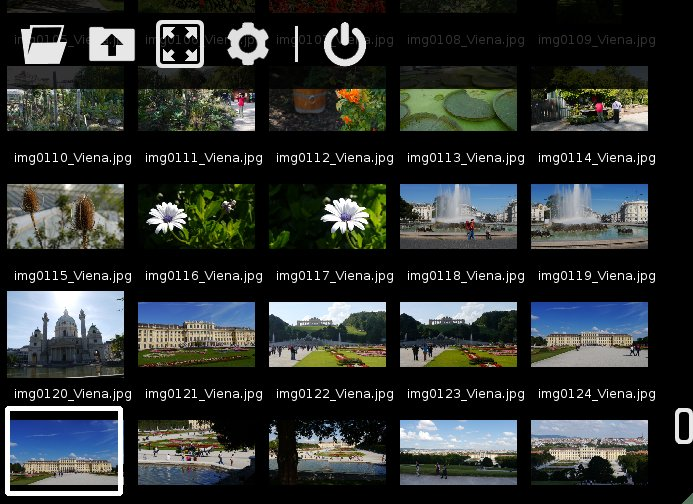

Folder View

This screen displays a list of all images found in the selected folder. When switching to this mode, if there is already an imaged opened, the selected folder will be the one that contains that image. Otherwise, you can use the top menu to open the folder you want.
You can do the following actions in this screen:
- Click and drag to scroll through the image. Scrolling can also be done with the mouse wheel.
- Simple click on the image the open it.
- Use two fingers to zoom the thumbnails.
- Use the arrow keys to select an image and the Enter key to open it.
- Use the top menu with a single click.
The menu items are (from left to right):
- Open - This option will allow you to select a folder to open. Once it is opened, it will display the list of images contained in that folder.
- Up - Selects the parent folder.
- Fullscreen - Switches between fullscreen and windowed mode. The same thing as double-tapping the image.
- Configure - Opens the settings window.
- Exit - Closes the application.
Use the "Show folders" setting from the configuration window if you want to show/hide subfolder